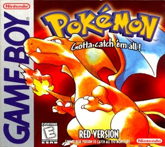
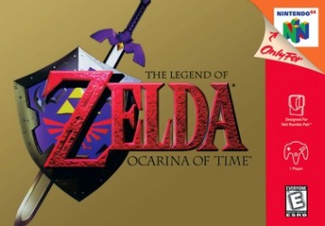
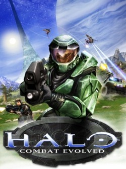
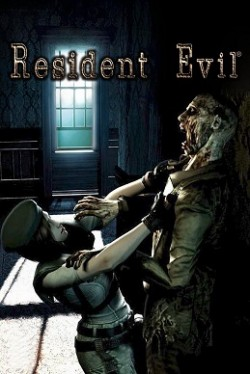
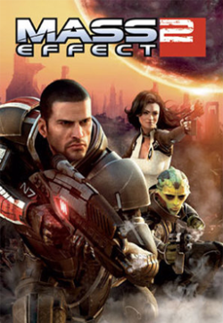
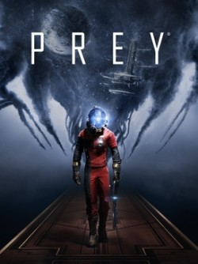
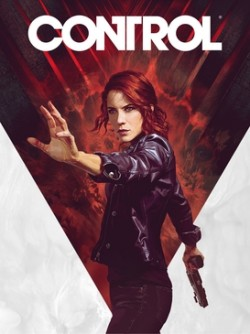

TL;DR
This isn’t my usual content. If you just want the list and don’t want to listen to me wax poetic, scroll for the pictures.
Fair warning: I spoil endings for the games in this list.
Introduction
I love video games. The pitch has always been that they put you IN the story. That unlike a movie, you’re the one driving. That’s true. It also turns out not to be what any of this is about.
I’ve been looking for something to play recently, and in 2026 I’m spoiled for choice. Do I play something I’ve already played so that I can get a hit of nostalgia, or do I play something new and risk sinking time into something I may not like? It got me thinking about what my favorite games were, and more importantly, what made them my favorite games.
So I started writing them down, and the list came out wrong. I’ve put thousands of hours into these games. What I actually kept is about ninety seconds each.
The list
I could make a list hundreds of games long, but we’d be here all day. This list is in order of release year, not in order of any ranking.
You’ll notice a pattern: I prefer single-player, story-driven games. I do have fond memories of multi-player games (GoldenEye 007, Call of Duty 4: Modern Warfare, Super Smash Bros., etc…), but there’s something about a good story that I can’t step away from.
Pokémon Red (1998)

Pokémon is the only game on this list I can’t defend on its own merits. The battle system is rock-paper-scissors with more rocks, and every game has been a copy of Gen1. I got Red for Christmas, my brother got Blue, and neither of us could complete it on our own. That was the point. Red and Blue each ship with Pokémon the other one doesn’t have, and a handful of evolutions only trigger when you trade the creature to another person. Game Freak shipped two incomplete games on purpose, and the only fix was finding someone to play with. My nostalgia isn’t really for the game itself, but for being nine years old and needing someone else in the room to play the game with.
The Legend of Zelda: Ocarina of Time (1998)

I didn’t know it at the time (I was only nine years old), but this would be the best game I would ever play.
The first time through, the game was about killing bad guys, getting out of the Water Temple, and beating the boss. I replayed it through my teens with the explicit purpose of 100% completion, learning from each previous playthrough: every piece of heart, every mask, all 100 Gold Skulltulas, etc… I replayed it again as an adult and the weight of the story hit me like a ton of bricks.
It took me a while to notice that those three playthroughs are the plot. You’re a kid, you pull a sword out of a pedestal in the Temple of Time, and you wake up seven years older to find your world on fire and everyone you knew scattered. There are the obvious themes of the hero’s journey, but underneath that, it’s a game about the world moving on without asking your permission. I got a different game every time because I kept showing up as a different person.
And then there’s the ending, which I don’t think I actually understood for an embarrassingly long time. Zelda sends you back. You get the seven years returned to you, you’re a kid again, and the world never has to live through any of the horror that you did. Ganondorf never takes Hyrule, which means nobody ever gets saved. Every friend you made as an adult is somewhere out there having never met you. Everything you did happened to exactly one person. That’s the part I can’t shake. Which is the joke, I guess. I keep going back to a game about not being able to go back.
If you haven’t, I highly recommend watching this video by YouTuber Good Blood about OOT (I find myself watching it every couple of years for nostalgia’s sake).
Halo: Combat Evolved (2001)

Halo did a lot of things right (the lore, the soundtrack, the dual-stick controls, the split-screen multiplayer), but the thing that got me was one shot in the first thirty minutes. You come out of a crashed lifepod, look up, and the ring is above you. It curves off the top of the sky and comes back down somewhere behind you.
Every game world I’d played up to that point ended at a wall. Halo’s world ended by pointing at itself. Nobody had to tell me where I was, how big it was, or how much trouble I was in, because I could see the ground I’d be standing on in six hours hanging over my head. I wasn’t playing a shooter. I was the guy in the movie.
Resident Evil (2002)

I never played the 1996 Resident Evil on PlayStation. I was too young, and my mom would never have allowed it. So in 2002, I talked my dad into buying me the GameCube remake, and we agreed not to bring it up at dinner.
Then I walked into the eastern corridor and the dogs came through the windows. I wasn’t startled. I was scared. There’s a kind of fear that only works on kids, because you haven’t learned yet that the game is on rails and the dog is a pile of polygons on a timer. You just know that something came through the glass at you. And I couldn’t exactly go yell about it, because I wasn’t supposed to be playing it in the first place. That’s what stood out to me. Not the fixed cameras, not the tank controls, not the item box. RE is on this list because it’s the first time a video game did something to my body.
Mass Effect 2 (2010)

I have a confession: After playing Halo CE, I tried to play Mass Effect, but couldn’t get into it. I should have loved it. Sci-fi, shooting, a future where humanity gets dragged into a much larger galaxy and has to make unlikely allies against an existential threat. On paper it’s Halo with better dialogue. But at the time, I found it slow. Too much talking, not enough shooting. I didn’t like the mechanics, I didn’t like babysitting my squad, and I put it down.
I picked up the Legendary Edition in 2024 and it was a completely different series. A decade of Skyrim had taught me to enjoy the exact parts I used to skip. Seeing a choice I made in ME1 quietly resurface in ME3 was wild. The game didn’t get better. I got older.
ME2 is the best of the three, and the reason is the ending. The final mission is called the Suicide Mission, and it’s exactly what it sounds like: every member of your crew can die in it, and so can you. Who survives comes down to whether you ran their loyalty missions, whether you upgraded the ship, and whether you sent the right person to do the right job. All of that gets decided in the twenty hours before the mission, mostly by sitting down and listening to people talk about their problems. So the game spends its entire runtime letting you believe the conversations are optional, and then grades you on them.
The Elder Scrolls V: Skyrim (2011)

For the longest time, I never understood fantasy games (i.e., magic, talking cats, etc…), but I now own at least six copies of Skyrim (who doesn’t). What I couldn’t understand until I played it is that Skyrim isn’t a story, it’s a place. I’ve finished the main quest once. The rest of those thousands of hours were spent walking toward one mountain, seeing something on a different mountain, and never arriving at either.
Which makes this the only entry on the list I can’t give you a moment for. Everything else here is ninety seconds I can point at. Skyrim doesn’t have ninety seconds. It has a road, and weather, and some guy at the bottom of the road who wants to tell you about a cave. I couldn’t tell you one thing that happened in Skyrim in the order it happened. I can tell you what it’s like to come over a hill at dusk and see the aurora.
I think that’s the whole difference. A moment only works the first time. A place will take you back as many times as you want, it doesn’t care that you’ve already been, and it doesn’t ask what you did last time.
Prey (2017)

Prey is the biggest sleeper on this list, and I only played it in 2024 (seven years late) because I was under the impression it was a Doom-like run-and-gun. It is not, in the best possible way. It’s an “immersive sim,” a genre I’d never touched (I considered Skyrim an RPG), and it asks questions about ethics and reality that I did not sign up for. The opening also has one of the best soundtracks and a mind-blowing reveal. The other thing Prey does is refuse to have a correct answer. The mechanics let you do genuinely anything (I later learned this is called emergent gameplay), and small choices come back later in ways you don’t see coming.
But here’s why it’s on this list. Years after the dogs came through the windows in Resident Evil, a Phantom found me on Talos I, and I was scared again. I said earlier that there’s a kind of fear that only works on kids. I was wrong. I never got a clean look at the thing. I just heard it, somewhere off in a room I’d already cleared, stalking around and muttering to itself (video here). I had a wrench and a GLOO Cannon and I couldn’t land a shot with either, not because the fight is hard, but because my hands weren’t working.
Then I noticed my heart was pounding, and that the feeling was great. I’m a grown man who paid money to be made afraid of a sound, and it worked exactly as well as it did when I was a kid. Once I had the upgraded Shotgun and Combat Focus, however, the whole station flipped: the enemies were trapped in there with me, instead of me being trapped in there with them 😈.
Control (2019)

Control is a great game on its own merits, but I’m only here to talk about fifteen minutes of it.
You spend the entire story building up your powers and weapons, and near the end of the game, you enter the Ashtray Maze. Then, with no warning whatsoever, Take Control kicks in, played by the in-game band Old Gods of Asgard (who are really the real-world band Poets of the Fall). You proceed through the maze feeling like an absolute badass, mowing down enemies, while a rock song plays as your personal soundtrack 😙🤌. It is easily the best “I am Superman” moment I’ve had in gaming and a moment that I would love to experience again for the first time. This is an excellent reaction video to the Ashtray Maze.
Someone on Reddit described the game as <You will be happy/content that you played it>, which will mean nothing to you until the Board starts talking, and then it will be the funniest thing you’ve read all week.
What’s next?
Below are some games that I’d like to play. I’m spoiled for choice here and honestly have analysis paralysis.
- System Shock (1994) or 2023 remake
- Deus Ex (2000)
- Perfect Dark (2000) or 2010 remaster
- Ico (2001) or 2011 remaster
- Shadow of the Colossus (2005) or 2011 remaster or 2018 remake
- BioShock (2007) or 2016 remaster
- The Witcher 3: Wild Hunt (2015)
- God of War (2018)
- Red Dead Redemption 2 (2018)
- Elden Ring (2022)
- Metroid Prime Remastered (2023)
- Halo: Campaign Evolved (2026)
- Control Resonant (2026)
- The Legend of Zelda: Ocarina of Time Remake (2026)
- Exodus (2027)
- The Expanse: Osiris Reborn (2027)
- Gen Atlas (TBD)
Conclusion
Writing this out, I noticed a couple things.
First, most of these entries aren’t really about a game, they’re about a few moments: the Ashtray Maze, the first Phantom, seeing the Halo ring up close, pulling the Master Sword from the Temple of Time. Thousands of hours, but what I actually kept is about ninety seconds each.
Second, this list skews hard towards when I was younger. Is that because games today are cash-grab remakes, because I had more free time, or because a game could only ever suggest a world and my brain had to do the rest of the work? I’m going to say yes to all three (and then point out that quiet a few games on my “what’s next” list are remakes or remasters).
So, did any of this help me decide what to play? No. I’ll probably just reinstall Skyrim for the n-th time.
-Logan